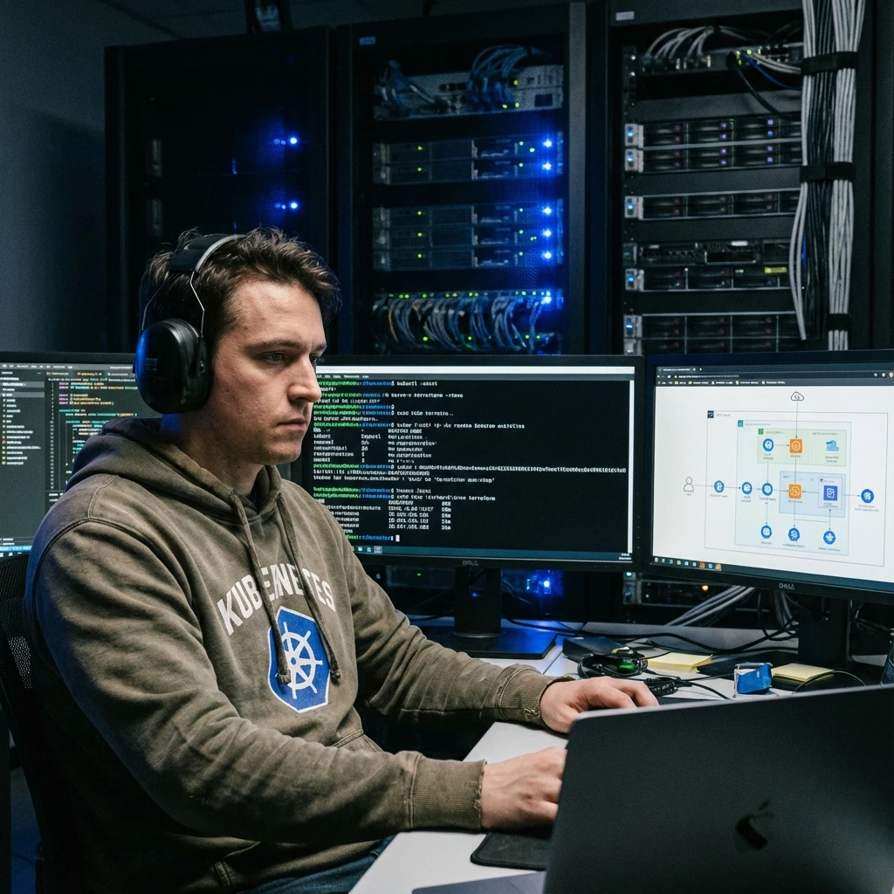
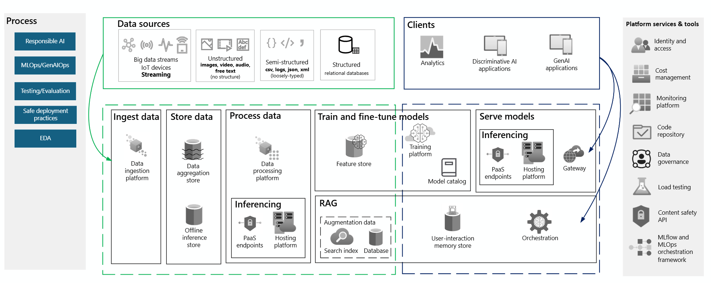
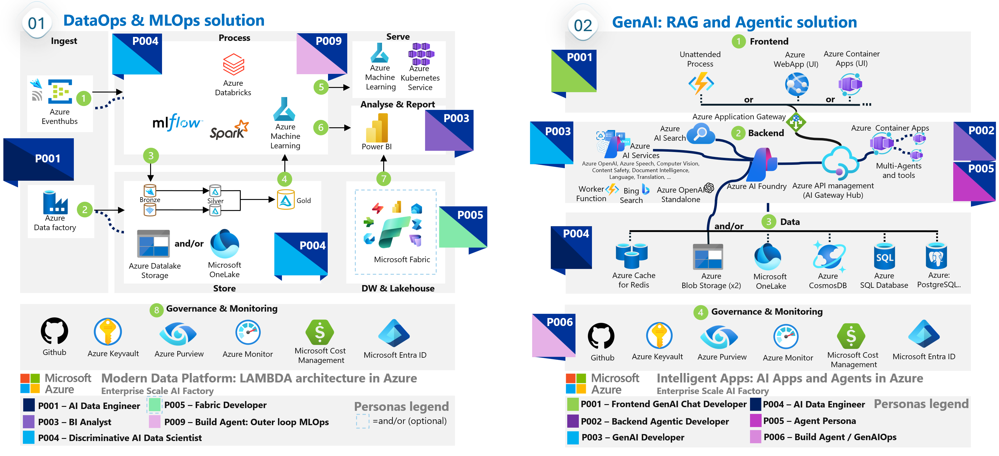
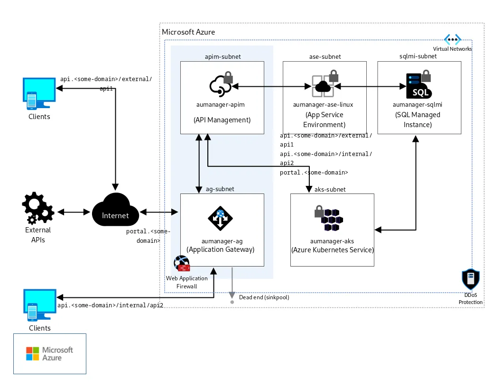
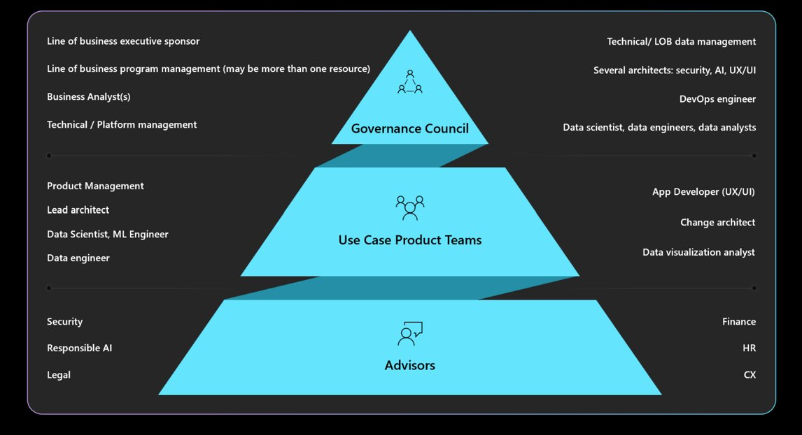
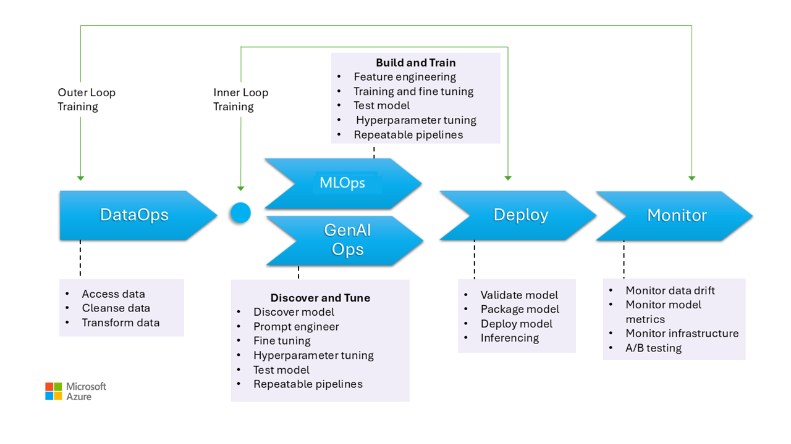
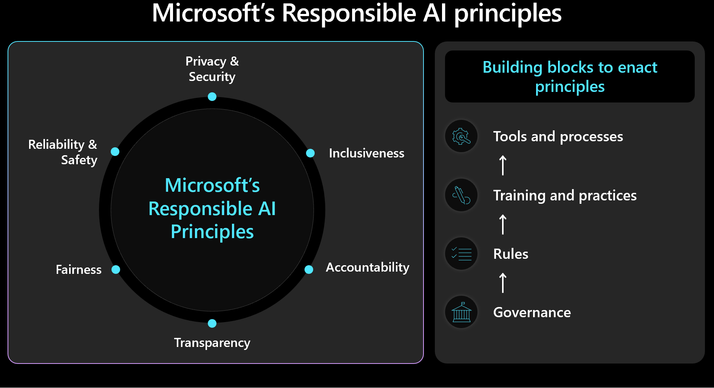

A demo just survives a presentation. This is the playbook for crossing the gap. We stop guessing and start engineering: dual-lane isolation, evidence-based refusal contracts, and Day-2 operations that keep you out of the headlines.
Get the Production Starter Kit
Don't start from a blank slate. Download the full UKLifeLabs Wave 1 Pack including:
- Architecture Diagrams (Visio/Mermaid)
- APIM Policy Pack (12+ policies)
- Bicep/Terraform Modules (AKS, Search, AI)
- Security Audit Checklist (Excel)
*Includes the official APIM Bicep Module (PremiumV2).

The Cast

Decisions, RACI, milestones.
Scene 1: The Question that Matters
Project Manager: “We go live next week. Are we production-ready?”
Trinity: “The chat works. The ingestion pipeline is moving documents. It looks great in the playground.”
Morpheus: “That’s not production, Trinity. That’s just a working endpoint. A production system survives an adversary; a demo just survives a presentation.”
Upendra: “Morpheus is right. In this new era, 'production' is a high bar. It means being safe, reliable, cost-controlled, testable, and operable. Anything else is just compute.”
1) Why AI Architecture is Different
Traditional software fails in predictable ways. AI applications fail in surprising ways:
- Non-determinism: the same question might get different answers
- Hallucinations: the model states facts that aren’t in the data
- Token runaway: costs spike quietly as prompts bloat
- Prompt injection: users trick the model into bypassing safety rules
To counter this, we don’t just code. We architect guardrails.
2) WAF Pillars → Production Guardrails
Upendra turns “principles” into controls. This is what makes the design review easy.
| WAF Pillar | What it means for AI workloads | Wave 1 guardrails to implement |
|---|---|---|
| Reliability | Survive throttling + timeouts + backlogs | Bulkheads (2 lanes), queue-based ingestion, retries/backoff, circuit breaker |
| Security | Prevent data leakage + bypass routes | APIM boundary, private endpoints, security trimming, content safety |
| Cost Optimization | Stop silent spend creep | Token budgets at gateway, per-product quotas, caching, PTU strategy |
| Operational Excellence | Run it daily without heroics | Trace IDs, dashboards, runbooks, incident playbooks, versioning |
| Performance Efficiency | Keep p95 stable under load | Retrieval time budget, topK caps, hybrid retrieval, graceful refusal paths |
3) Reference Architecture: Two Lanes, One Gateway
To prevent downstream chaos, we separate the workload into two isolated lanes with one boundary.

- Ingestion Lane (The Truth Factory): Documents move from extraction to indexing. We insert a Queue for backpressure, so upload spikes do not crash Search.
- Chat Lane (The Intelligence Path): This is the user path. The UI never calls Search or OpenAI directly.
Why this works: bulkhead isolation. Ingestion can be on fire and chat still holds p95.
4) The Five-Layer Model
Upendra stops the “patchwork architecture” by layering the workload.

| Layer | Responsibility | Azure component |
|---|---|---|
| 1. Client | UI only, keep it thin | Teams / Web App / Open WebUI |
| 2. Intelligence | Orchestrator where rules live | Orchestrator API |
| 3. Inferencing | Model calls + deployment versioning | Azure OpenAI / Foundry |
| 4. Knowledge | Retrieval + grounding | Azure AI Search + ADLS |
| 5. Tools | Actions + business APIs | Internal APIs via APIM |
Rule: the client is a view. The orchestrator is the brain.
5) The AI Workload Design Loop
Trinity: “Once deployed, we are done, right?”
Upendra: “In AI, you are never done. You ship, then you correct drift.”
Wave 1 needs this loop:
- Build: prompt, retrieval, policies, limits
- Measure: citation coverage, refusal rate, p95 latency, token/request
- Adapt: tuning chunking/retrieval, policy updates, index rebuilds
- Control change: version prompts, indexes, policies, model deployments
6) Platform Decisions (Wave 1 Tips)
AKS vs ACA
- AKS: best for regulated production patterns (network control, segmentation, multiple internal services)
- ACA: good for rapid pilots, fewer ops, but less control for complex enterprise segmentation
Training vs Inference Compute
- Inference should be stable, monitored, and protected behind APIM
- Training/fine-tuning is usually batch + transient. Shut it down when idle
- Prefer managed options (Azure ML) over "always on" VM clusters for sporadic training jobs.
7) The Three Golden Production Contracts
Upendra insists most copilots fail because they lack clear contracts.

Contract 1: Evidence-or-Refusal
If grounding exists → answer + citations.
If grounding is missing → refuse.
Enforce it server-side using a validator. Not just prompt wording.
Contract 2: The Audit Trail
A “200 OK” is not an audit. Log what influenced the answer associated with the `requestId`: chunk IDs, filter logic, model deployment, and index version.
Contract 3: Permission-Aware Retrieval
The model is not your security boundary. Retrieval is. Security trimming must be enforced using validated identity claims so users only see authorised content.
8) Grounding Data Design
Morpheus: “Show me the mechanism that prevents cross-team leaks.”
Upendra: “It’s not the model. It’s the metadata and filters.”
Minimum Chunk Metadata (Wave 1)
- `docId`, `chunkId`, `content`, `vector`
- `pageNumber`, `sourcePath`
- `allowedGroups[]` (or ACL tags)
- `classification`, `ingestedAt`, `indexVersion`
9) Data Platform Strategy
Don’t build an extra data platform “because AI”. Start simple with ADLS for raw/extracted content and AI Search for vectors. Add complexity (Fabric/OneLake) only when specific aggregation or governance needs demand it.
10) Operations: Monitor Signals, Not Hopes
- Model: Refusal rate, p95 latency, 429 throttle events.
- Cost: Tokens per request, cost per route (chat vs ingestion).
- Retrieval: Logic drift, index freshness, no-results rate.
- Ingestion: Queue depth, processing failures, document throughput.
11) Day-2 Operating Model
This avoids “who owns it?” fights during incidents.

| Area | Primary owner | What they own |
|---|---|---|
| APIM + identity boundary | Platform team | Auth, rate limits, token budgets, routing |
| Orchestrator API | App team | Prompting, validation, contracts, fallback logic |
| Search + Retrieval | Data team | Index schema, chunking, filters, freshness |
| Security + Compliance | Security team | Content safety, audit reviews, policy sign-off |
12) Testing and Gates
Credibility comes from a Golden Test Set of 30–50 questions including "must refuse" scenarios and prompt injection attempts. Block release if citation coverage drops or cross-group retrieval is detected.
13) GenAIOps Change Control

Version everything that changes behavior: `promptVersion`, `indexVersion`, `policyVersion`. Your release gates must verify security trimming and injection resistance before every deployment.
14) Responsible AI (Minimum Controls)

Responsible AI is not a slide. It’s enforcement. Ensure citations are transparent, content safety filters are active (input/output), and PII usage is explicitly governed.
Scene 2: The Definition of Done
Client Sponsor: “So, what did we really ship?”
Morpheus: “A Copilot that doesn’t leak data, doesn’t collapse under load, and leaves an evidence trail for every answer.”
Upendra: “That is Well-Architected AI. The rest is just compute.”
Ready to operationalize your AI?
I help organizations turn stalled pilots into governed production engines.